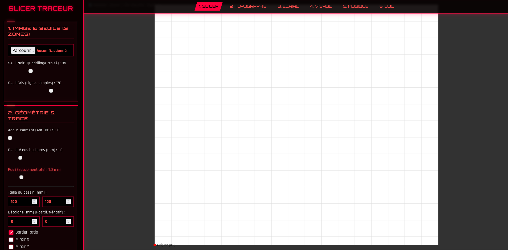
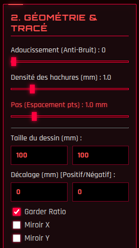

Module 1 : Le Slicer Traceur
Le Slicer Traceur est le module principal de la MachineThatDraws. Conçu intégralement en JavaScript (avec l'aide des librairie p5.js et imagetracer.js pour le rendu visuel), ils permetent de convertir n'importe quelle image matricielle (JPEG, PNG) en un ensemble de trajectoires vectorielles (G-Code) prêtes à être dessinées au stylo.

1. Le Traitement d'Image (Système à 3 Zones)
Pour s'adapter aux contraintes physiques d'un stylo (qui ne peut faire qu'un seul niveau de couleur : tracé ou non tracé), nous avons développé un système de seuillage intelligent à 3 zones avec prévisualisation en temps réel :
- Zone Noire (Seuil Noir) : Représente les ombres denses. L'algorithme génère un quadrillage croisé (hachures diagonales dans les deux sens) pour saturer le papier en encre.
- Zone Grise (Seuil Gris) : Représente les demi-teintes. L'algorithme génère de simples lignes diagonales espacées pour créer un effet d'ombrage léger.
- Zone Blanche : Les zones claires au-dessus du seuil gris sont purement et simplement ignorées par la machine (épargne du papier).
- Optimisation de l'UI : Pour éviter de faire figer le navigateur, l'ajustement de ces seuils modifie instantanément l'image de fond en 3 couleurs pures (Noir/Gris/Blanc) sans recalculer les trajectoires. Le calcul lourd du G-Code n'intervient qu'au clic sur le bouton "Actualiser".
2. Paramètres Géométriques & Tracé
L'interface offre un contrôle total sur le positionnement physique du dessin sur le plateau de 170x140 mm :
- Décalage et Dimensions : Mise à l'échelle personnalisée avec conservation du ratio natif, et décalage (Offset X/Y) pour placer le dessin exactement où on le souhaite sur la feuille.
- Le "Pas" (Espacement des points) : Paramètre critique. L'algorithme rééchantillonne chaque courbe en segments de droites selon cette valeur en millimètres. Un pas fin (ex: 0.2mm) donne des courbes parfaites mais un fichier G-Code lourd, un pas large (ex: 2mm) donne un effet géométrique/low-poly.
- Miroirs Dynamiques : Possibilité d'inverser le dessin sur l'axe X ou Y, avec un retour visuel direct sur le canvas de prévisualisation.

3. Les Algorithmes "Sous le capot"
Développer notre propre Slicer nous a obligés à implémenter plusieurs algorithmes mathématiques complexes pour garantir le bon fonctionnement de la machine :
- Vectorisation des contours : Utilisation de la librairie ImageTracer.js pour détecter les arêtes de l'image, suivie d'une conversion des courbes de Bézier quadratiques en coordonnées cartésiennes linéaires compréhensibles par la CNC.
- Algorithme de Cohen-Sutherland (Clipping) : Sécurité matérielle critique. Si l'utilisateur demande à tracer une image qui dépasse les dimensions physiques de la machine (170x145mm), cet algorithme mathématique "coupe" virtuellement toutes les lignes qui sortent du cadre. L'interface dessine ensuite automatiquement une bordure de délimitation propre le long de la coupe.
- Optimisation du chemin (TSP approché) : Pour éviter que le stylo ne passe son temps à se lever et se baisser de manière aléatoire aux quatre coins de la feuille, nous avons implémenté un algorithme du plus proche voisin. Après avoir généré toutes les lignes, le script réordonne la liste des trajectoires pour toujours lier une ligne à la ligne la plus proche, réduisant le temps de tracé parfois de plus de 40%.
4. Communication Directe (Web Serial API)
Une fois les trajectoires générées, le navigateur Web prend le contrôle exclusif de la machine. Grâce à l'API Web Serial, l'interface HTML/JS se connecte directement au port USB du microcontrôleur ESP32. Le G-Code généré est envoyé ligne par ligne, avec une vérification de la réponse "ok" du firmware (FluidNC/GRBL) pour synchroniser la barre de progression en temps réel.